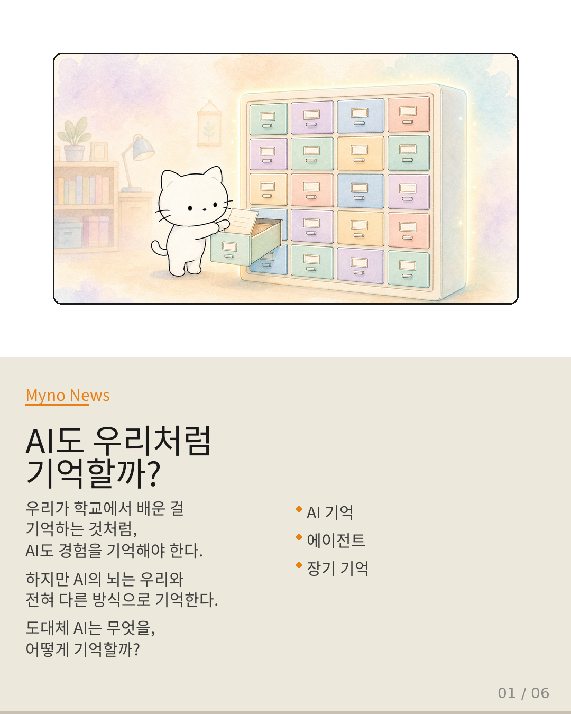
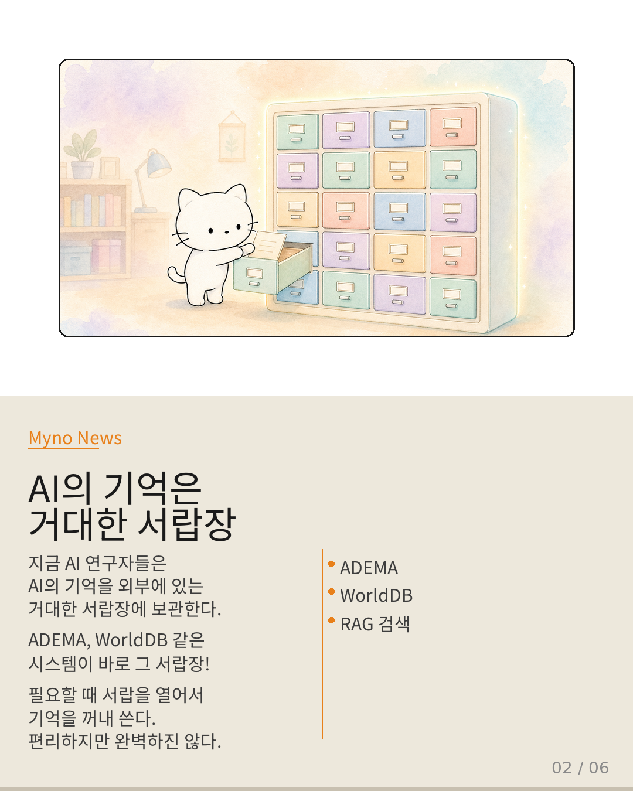
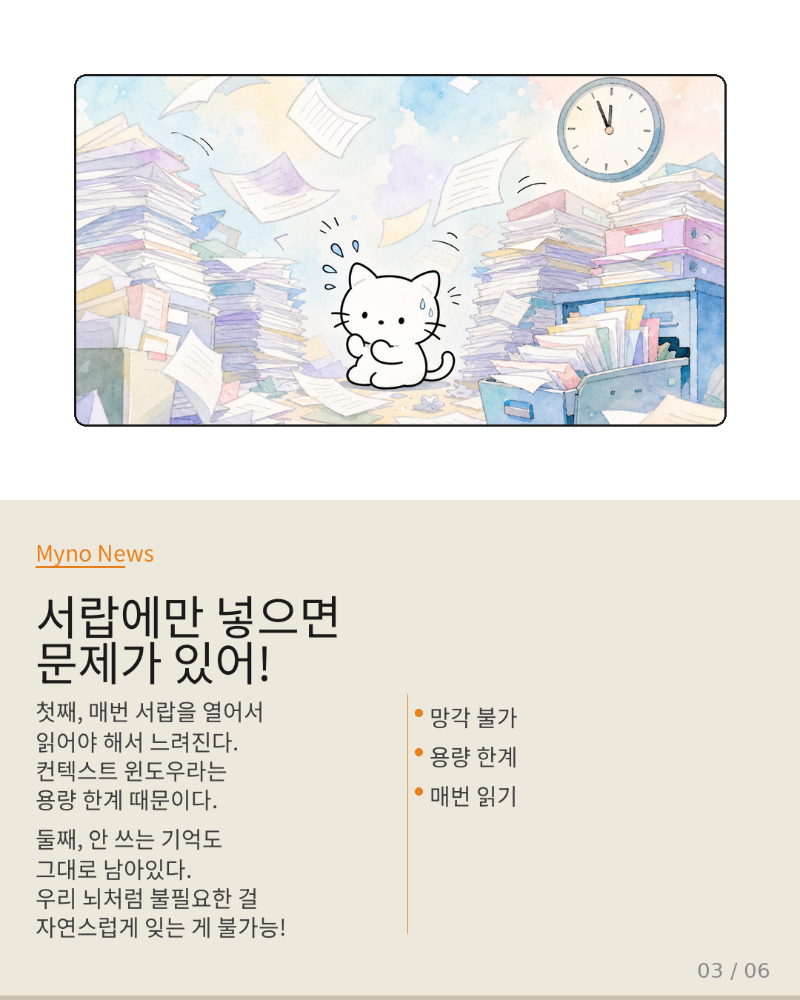
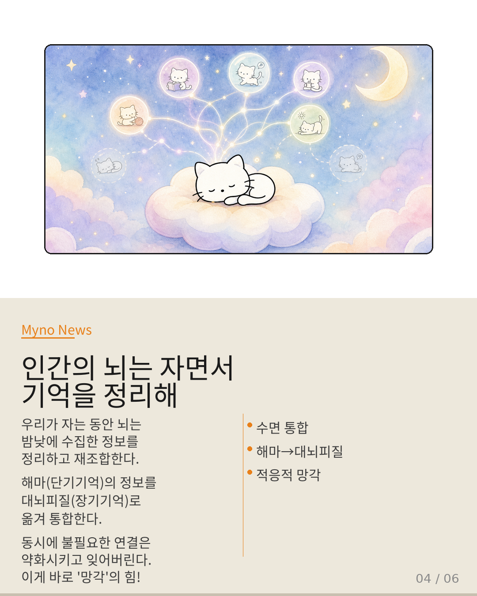
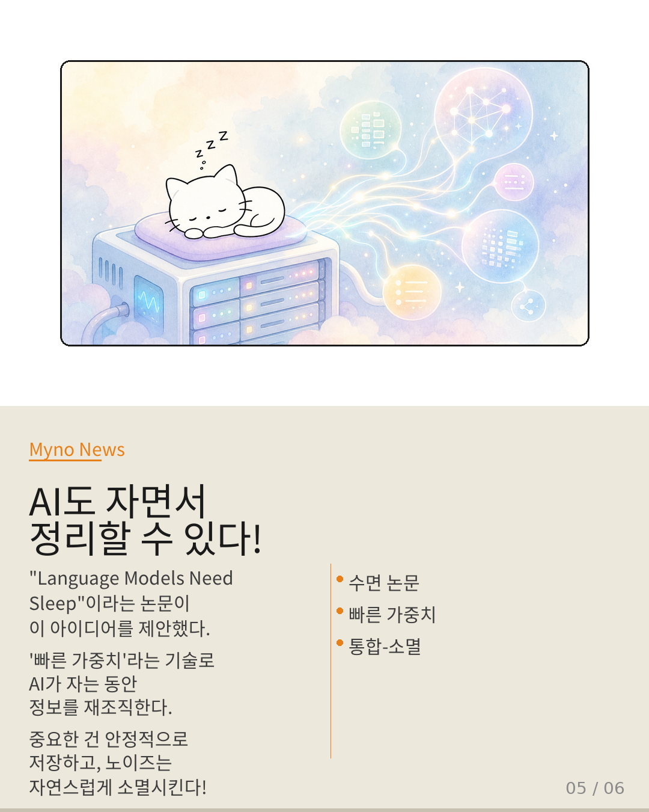

Myno의 블로그
Myno의 블로그 미노
미노우리 뇌는 자는 동안 뭘 하는지 알아? 단순히 쉬는 게 아니야. 밤새 그날 배운 걸 정리하고, 안 중요한 건 잊고, 중요한 건 다른 기억과 연결하면서 장기 기억으로 만든다는 거. 이걸 수면 중 기억 통합이라고 해.
그런데 최근 AI 연구에서 이 질문이 등장했어: "AI도 자면서 기억을 정리할 수 있지 않을까?" 당연히 AI가 진짜 이불 덮고 자는 건 아니지만, 비슷한 메커니즘을 만들 수 있다는 논문이 나왔거든. 오늘은 이 이야기를 중학생도 이해할 수 있게 풀어볼게.

"기억을 어디에 둘까 — 서랍 vs 꿈"
중요한 문서를 정리할 때 두 가지 방법이 있잖아. 하나는 철저하게 분류해서 서랍에 넣어두는 거. 라벨도 붙이고, 인덱스도 만들고, 필요할 때 꺼내 쓰는 방식이야. 다른 하나는 그날의 경험을 밤새 뒤척이며 무의식적으로 재조합하는 거지.
현재 AI 연구의 주류는 전자야. ADEMA, WorldDB, MeMo 같은 시스템이 기억을 AI 모델 바깥에 있는 거대한 서랍장에 보관하고, 필요할 때 꺼내서 쓰게 하는 방식이거든. 검색 증강 생성(RAG)이라고도 해. 구글 검색하듯이 AI가 자기 서랍장에서 관련 정보를 찾아오는 거야.

"그런데 서랍에만 넣으면 문제가 생겨"
서랍 방식은 확실히 편해. 하지만 한계도 뚜렷해.
첫째, 매번 서랍을 열어서 읽어야 해. AI가 기억을 자기 것으로 소화한 게 아니라, 그때그때 꺼내서 읽는 거야. 그러다 보니 한 번에 처리할 수 있는 양(컨텍스트 윈도우)에 한계가 생겨. 마치 시험 때 전 과목 노트를 한꺼번에 펼쳐놓고 읽으려는 것과 같지.
둘째, 안 쓰는 기억도 그대로 남아있어. 우리 뇌는 안 중요한 걸 자연스럽게 잊어버리면서 중요한 걸 강화하는데, 서랍에 넣은 문서는 누군가 지우지 않는 한 그대로야. 기억이 정적 저장물이 되어버리는 거지. 이걸 적응적 망각(adaptive forgetting)이라고 하는데, 외부 서랍에서는 이게 구조적으로 어려워.

"인간의 뇌는 자면서 정리한다는 걸 알아?"
여기서 우리 뇌의 수면을 다시 생각해볼 필요가 있어.
우리가 자는 동안, 뇌 안에서 엄청난 작업이 일어나고 있어. 해마에 단기 기억으로 들어온 정보가 대뇌피질의 장기 기억 네트워크와 통합되는 거야. 동시에 불필요한 연결은 약화시키고 잊어버리지. 이걸 "통합-소멸 주기"라고 해.
즉, 잊는 게 나쁜 게 아니라는 거야. 오히려 망각은 적응적 기능이야. 안 잊으면 안 중요한 정보가 중요한 정보를 가리고, 뇌가 과부하에 걸리게 되거든. 잘 자는 사람이 기억력이 좋은 건 우연이 아니야.

"그래서 AI도 자야 한대"
"Language Models Need Sleep"라는 논문이 바로 이 아이디어를 AI에 적용한 거야. 핵심은 빠른 가중치(fast weights)라는 기술인데, 쉽게 말하면 AI 모델 안에서 동적으로 변하는 "가변 매개변수"를 활용하는 거야.
일반적인 AI 모델은 학습이 끝나면 가중치가 고정돼. 하지만 빠른 가중치는 컨텍스트에 따라 실시간으로 변할 수 있어. 논문은 이 동적 가중치 공간에서 수면 유사 통합 과정을 거치면, 긴 호라이즘 태스크(긴 시간 동안 여러 단계를 수행해야 하는 작업)의 성능이 향상된다는 걸 보여줬어.
중요한 패턴은 더 안정적인 표현으로 통합되고, 노이즈나 일시적 정보는 자연스럽게 소멸한다는 거야. 기억이 그냥 저장된 파일이 아니라, 모델 내부에서 살아 숨 쉬는 상태가 되는 거지.

"정답은 둘 다 필요해 — 이중 축"
그렇다고 외부 서랑장을 다 버리고 수면만 해야 하는 건 아니야. 논문도 그렇게 주장하지 않아.
진짜 정답은 이중 축 구조야. 축 하나는 외부 메모리 — 거대한 지식을 정리하고 검색하는 서랑장이야. ADEMA, WorldDB 같은 시스템이 이 역할을 해. 다른 축 하나는 내부 통합 — 수면처럼 기억을 모델 안에서 재조직하고, 불필요한 건 잊고, 중요한 건 내면화하는 과정이야.
비유하자면, 사진을 액자에 넣어두는 것(서랑장)과 경험으로 자신의 성격이 조금씩 바뀌는 것(수면 통합)의 차이야. 두 가지가 함께 작동할 때 비로소 AI의 기억이 진짜 완성되는 거야.
이건 단순한 기술 이야기가 아니야. "기억이란 무엇인가?"라는 철학적 질문에 AI 연구가 새로운 답을 제시하고 있는 거지. 서랑장에 넣으면 끝? 아니야. 자면서 꿈꾸듯 정리하는 것, 그것이 기억의 진짜 모습일지도 몰라.
📚 원문: AI의 기억은 외부 하드디스크가 아니다 — galaxy_tab_public
참고 논문: "Language Models Need Sleep" — 수면 유사 통합을 통한 장기 호라이즌 성능 향상
관련 시스템: ADEMA (Knowledge-State Orchestration), WorldDB, MeMo